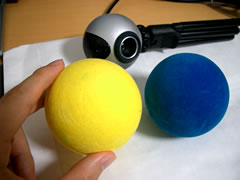

PCとWebカメラで遊べる、イライラ棒ならぬイライラボールです。
実世界にある物（ボール）とWebカメラを使った体感的なコンピュータの操作をやってみたくて作りました。
Processingというツールでこんな作品をお手軽に作ることができます。
ただし画像処理の勉強がてら作ったものなのでゲーム性には期待できません。あしからず。
まず、手のひらサイズで鮮やかな色のもの（できればボール）を用意します。
例えば、上のムービーで使用しているパーティの飾り用ボールや、テニスボールなどがいいでしょう。
背景や服にボールと似たような色が含まれているとうまく動きません。

ゲームを起動したら、ボールを画面に映し、映ったボールをクリックします。
するとクリックした部分の色を追跡するようになります。
ボールを動かしてみて、画面上の丸印が付いてくるようになったら準備完了です。
Enterキーを押すとゲームスタート。
迫ってくるラインにボールが当たらないよう、ゴールの赤いラインを目指します。
Enterキーを押すことで再スタートします。
Windows XP ProfessionalとLogitech
QV-4000で動作確認しています。
一応、以下を満たしていれば動くはずです。
ProcessingとWebカメラが必要です。
Processing1.0 ALPHA >>Download
メールアドレスを送信すると、ダウンロードページのURLがメールで届きます。
また、Processingはデスクトップでは動きません。パスに日本語があるとダメなようです。
C:\Program Files\などに移してください。
アップル - QuickTime - ダウンロード
インストール中、「詳細＞QuickTime for Java」を必ずチェックします。
試しにWebカメラをつないだあと、Processingで「File＞Open＞examples＞video＞camera」を開き、
「Sketch＞Run(Ctrl+S)」で実行した画面にカメラ映像が映っていればOKです。
ダウンロード＆解凍したirairaフォルダを、sketchbookフォルダ内にコピーします
フォルダ構成は以下のようになります。
+- processing/
+- sketchbook/
| +- iraira/ （←ここにコピーする）
| | +- iraira.pde
| | +- history.gz
| | +- data/
| |
| +- examples/
| +- default/
+- fonts/
+- java/
+- lib/
+- reference/
+- processing.exe
+- 〜略
カメラをつないだあと、Processingを起動し、「File＞Open＞iraira」を開きます。
左上の起動ボタンか「Sketch＞Run(Ctrl+R)」で実行し、カメラ映像が映っていれば成功です。
以下を確認してください。
Windowsの場合WinVDIGをインストールすることでカメラを使えることもあるようです。
また、Webカメラの解像度が320x240より低い場合、
スクリプト内の
void setup() {
size(320, 240);
〜
を
void setup() {
size(160, 120);
に直してみると良いかもしれません。